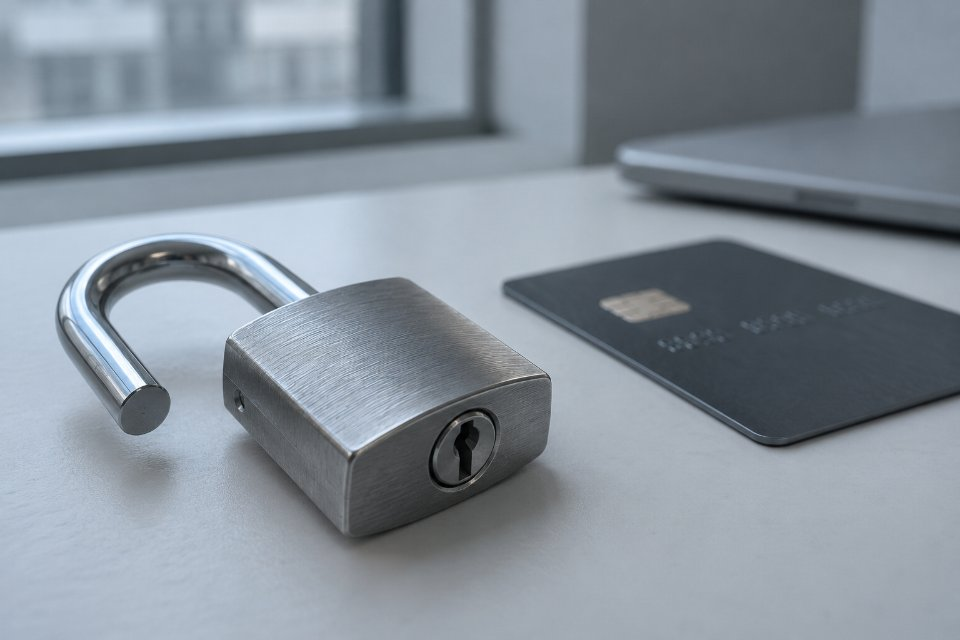

Списали 2,5 млн ₽ кредитных долгов
Платежи по пяти кредитам превысили зарплату, долг рос из-за штрафов. Суд освободил от всех долгов, единственное жильё осталось
Проверить в картотекеДело
Платежи по пяти кредитам превысили зарплату, долг рос из-за штрафов. Суд освободил от всех долгов, единственное жильё осталось
Проверить в картотекеПосле закрытия магазина остались долги перед банком и поставщиками. Провели процедуру, долги списаны, сделки за 3 года не оспорили
Проверить в картотеке
Приставы удерживали половину зарплаты. После введения процедуры удержания прекратились, через 7 месяцев суд списал долги
Проверить в картотеке